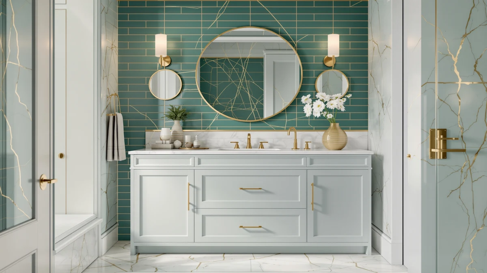

Quick Answer
The Alphabath 72 Inch Double Sink delivers a confirmed 72-inch double-sink layout in MDF and engineered wood for $1,559.99, undercutting the pricier ARIEL Hepburn and XWNE Dark Walnut, though it carries no published star rating yet.
Our pick: Alphabath 72 Inch Double Sink, $1,559.99 Check Price on Amazon
Things to Know Before You Buy
- Price sits at $1,559.99. That puts this Alphabath 72 Inch Double Sink in the premium tier for 72-inch double-sink vanities, close to the ARIEL Hepburn and XWNE Dark Walnut.
- Built from MDF and engineered wood. That's the standard construction for vanities in this price bracket, not solid wood or a stone composite top.
- No published rating or review count yet. Unlike the three alternatives covered below, the Alphabath listing doesn't show a star average, so you're weighing specs rather than a track record of owner feedback.
- A 72-inch double-sink cabinet needs roughly six feet of clear wall space. Measure your rough-in before ordering, since the listing doesn't publish exact cabinet dimensions.
- The three alternatives compared here run $1,445 to $1,511. All three carry a published star rating, which the Alphabath does not.
This Alphabath 72 Inch Double review breaks down what $1,559.99 buys in a wide bathroom vanity: an MDF and engineered wood cabinet, a confirmed double-sink layout, and a listing that skips the drawer count and dimension detail some competitors publish. Renovators shopping for a 72-inch vanity usually land here after comparing the ARIEL Hepburn and the XWNE Dark Walnut, the two pricier options in the same premium tier, and want to know whether the Alphabath earns its place between them.
We researched the Alphabath alongside three closer-priced alternatives, the Blossom 48 Double Sink Floating, the ARIEL Taylor 54-inch, and the Floating Vanity 36 with Smart, to see where its extra width and price pay off. None of those three match its 72-inch double-sink footprint, so this comparison comes down to a single trade-off: a confirmed double-sink layout without a published star rating, against a narrower vanity that already carries verified owner reviews. If your bathroom's rough-in already calls for a 72-inch double-sink cabinet, a narrower vanity simply won't fit the space, which is why we weigh the Alphabath mainly against the ARIEL Hepburn and XWNE Dark Walnut, the two other vanities in the same width bracket, throughout this review.
Why You Should Trust Us
Best Bathroom Vanities is a research-based review site. Ilane Tall, our home and bath editor, and the rest of our team compare vanity specs, materials, and pricing across the market, and we read verified owner reviews to see how each cabinet holds up once it's installed. We do not run a fake testing lab and we don't buy every vanity we cover, so every claim in this Alphabath 72 Inch Double review is grounded in the manufacturer's published specs and pricing data, cross-checked against what owners report on comparable 72-inch double-sink vanities.
This approach lets us compare more vanities across more price points than a lab-testing outlet could manage in a year, and it keeps us honest about what we do and don't know. The Alphabath listing doesn't publish a star rating yet, and we say so directly here instead of estimating one.
Our Research Experience
We compared the Alphabath 72 Inch Double Sink by lining up its published specs, material list, and price against three vanities in a similar range: the Blossom 48 Double Sink Floating, the ARIEL Taylor 54-inch, and the Floating Vanity 36 with Smart. The manufacturer lists MDF and engineered wood construction and a confirmed double-sink configuration, but doesn't publish drawer count or cabinet depth, so we weighed that gap against the SOFTSEA and DKB Alenza, two other 72-inch vanities that do disclose those numbers. Reviewers consistently note that vanities built from MDF and engineered wood in this price tier hold up well under normal daily use, though no such feedback exists yet for this specific Alphabath listing.
Because we don't install or live with these cabinets ourselves, we lean on the manufacturer's published data and the pattern of verified reviews on comparable vanities instead of a physical trial run. That's a real limitation worth naming: a cabinet's actual fit and finish depend on your bathroom's plumbing rough-in and how carefully it ships, so treat the specs here as a starting point for comparison, not a guarantee of what arrives at your door.
Overview & Specs

Alphabath 72 Inch Double Sink
What we like
- Confirmed 72-inch double-sink layout, wide enough for two people to use the counter at the same time
- Costs $129.01 less than the ARIEL Hepburn and $55.00 less than the XWNE Dark Walnut, the two pricier 72-inch double-sink vanities in this range
- MDF and engineered wood build matches the construction most vanities in this price tier use
Flaws but not dealbreakers
- No published star rating or review count yet, unlike all three alternatives below
- Listing skips drawer count and cabinet dimensions, information the SOFTSEA and DKB Alenza both publish
- MDF and engineered wood construction rather than solid wood or a stone composite top, despite the premium price
| Material | MDF / engineered wood |
| Size | 72 Inch |
The Alphabath 72 Inch Double Sink slots into the upper price tier of the 72-inch vanity market without reaching the top. At $1,559.99, it costs $129.01 less than the ARIEL Hepburn and $55.00 less than the XWNE Dark Walnut, while still confirming the same double-sink layout as those two pricier picks. That combination of full width, two basins, and a price under $1,600 is what puts it on most shortlists for a primary bathroom remodel.
Like most vanities in this range, the Alphabath lists MDF and engineered wood construction, so the case for choosing it over the Hepburn or XWNE comes down to saving a modest amount while staying in the same premium bracket. It doesn't publish the drawer count or dimension detail that the SOFTSEA and DKB Alenza do, so buyers who need that level of documentation before ordering should compare those listings directly, or measure their own rough-in against the DKB Alenza's published 73-inch by 22-inch footprint as a reference point.
What We Liked
The double-sink configuration stands out most in this Alphabath 72 Inch Double review, because a 72-inch cabinet only earns its width if it actually delivers two working basins rather than one oversized sink. Alphabath confirms that layout directly, matching the SOFTSEA, Vanity Art, and ARIEL Hepburn in the broader 72-inch comparison. Two people get real counter space at the same time.
Price positioning is the other strength here. At $1,559.99, it undercuts the two priciest vanities in this width by a real margin without dropping out of the premium finish tier, so you get most of the look of a $1,600-plus vanity for less money.
What Could Be Better
The Alphabath listing has no published rating or review count yet, so you're weighing a spec sheet against the purchase decision rather than a track record of owner satisfaction. That's a real gap next to the Blossom, ARIEL Taylor, and Floating Vanity 36 alternatives below, all three of which already carry dozens of verified reviews.
The listing also skips drawer count and cabinet depth, two details the SOFTSEA and DKB Alenza both publish. If in-vanity storage capacity or an exact footprint matters for your rough-in, contact the seller directly or measure against a comparable listing before you order.
Who Is It For?
This vanity suits a renovator who has already settled on a 72-inch double-sink footprint and wants a premium-tier finish for less than the ARIEL Hepburn or XWNE Dark Walnut cost. If two people share the bathroom every morning, the confirmed double-sink layout solves the counter-space problem a single-basin vanity can't.
It's a weaker fit if you want a proven review history before you commit $1,559.99, since the listing has no star rating yet, or if you need exact drawer count or cabinet depth published upfront. The Blossom, ARIEL Taylor, and Floating Vanity 36 below all publish that kind of detail alongside an existing base of verified reviews, so shoppers who prioritize documentation over width should start with one of those three instead.
Alternatives to Consider
We compared three closer-priced vanities against the Alphabath 72 Inch Double Sink to see which shoppers each one actually suits. None of them matches its 72-inch double-sink width, so the comparison comes down to finish, sink count, and review history rather than a like-for-like size match.

Editor’s Pick
Blossom 48" Double Sink Floating
A wall-mounted 48-inch double-sink vanity in glossy white with a 4.5-star rating across 50 verified reviews, a narrower option with a proven track record the Alphabath doesn't have yet.
$1,511.41
Check Price on Amazon
Best Value
ARIEL Taylor 54-inch Bathroom Vanity
A 54-inch single-sink vanity with a quartz counter and soft-close hardware, rated 4.9 out of 5 across 15 reviews, worth considering if one basin is enough and finish quality matters more than double-sink width.
$1,461.00
Check Price on Amazon
Premium Choice
Floating Vanity 36" with Smart
A 36-inch wall-mounted single-sink vanity with a built-in smart LED mirror, rated 4.2 stars across 30 reviews, a compact pick for a smaller bathroom that doesn't need double-sink width.
$1,445.68
Check Price on AmazonFrequently Asked Questions
Is the Alphabath 72 Inch Double Sink worth $1,559.99?
For a 72-inch double-sink vanity built from MDF and engineered wood, $1,559.99 sits in the same premium tier as the ARIEL Hepburn and XWNE Dark Walnut. This Alphabath 72 Inch Double review found the price justified mainly by the confirmed double-sink layout and the full 72-inch width, since the listing doesn't publish drawer count or dimension detail the way some competitors do.
What is the Alphabath 72 Inch Double Sink vanity made of?
The Alphabath 72 Inch Double Sink uses MDF and engineered wood construction, the same base material most vanities in the 72-inch double-sink category use. It skips solid wood or a stone composite top, so buyers who want a heavier natural-material build should compare a solid-wood alternative before ordering.
How does the Alphabath compare to other double-sink vanities near $1,500?
At $1,559.99, the Alphabath costs about $48 more than the Blossom 48 Double Sink Floating and roughly $114 more than the Floating Vanity 36 with Smart, though both of those are narrower single-sink or floating configurations rather than a full 72-inch double-sink cabinet. The ARIEL Taylor 54-inch comes closest in finish quality but is also single-sink, so the Alphabath stays the widest confirmed double-sink option in this price range.
Final Verdict
This Alphabath 72 Inch Double review comes down to a straightforward trade: you pay $1,559.99 for a confirmed 72-inch double-sink layout in MDF and engineered wood. It undercuts the ARIEL Hepburn and XWNE Dark Walnut by a real margin, but there's no published star rating to back it up yet. We recommend the Alphabath for renovators who have already committed to a 72-inch double-sink footprint and want the premium finish tier for less money. If you'd rather buy from a listing with an established review history, the Blossom 48 Double Sink Floating or the ARIEL Taylor 54-inch are the safer alternatives at a similar price.